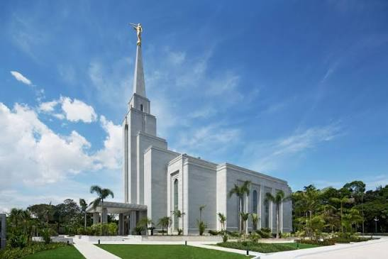
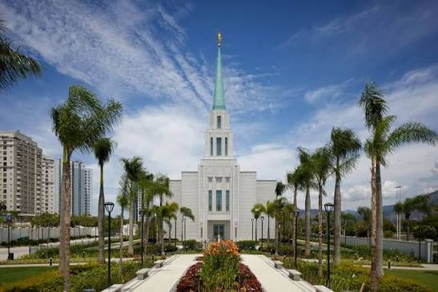
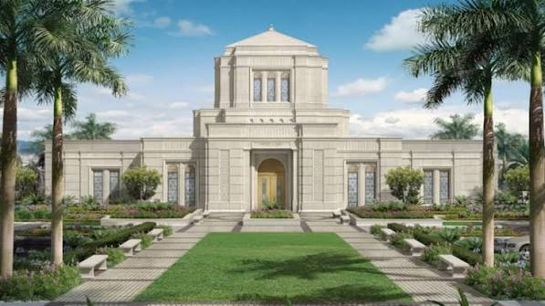

Temple Album
☰
Home
Old
New
Large
Small
Temple Album
São Paulo Brazil Temple
Recife Brazil Temple
Campinas Brazil Temple
Porto Alegre Brazil Temple

Manaus Brazil Temple

Rio de Janeiro Brazil Temple
Belém Brazil Temple
Salvador Brazil Temple

Belo Horizonte Brazil Temple